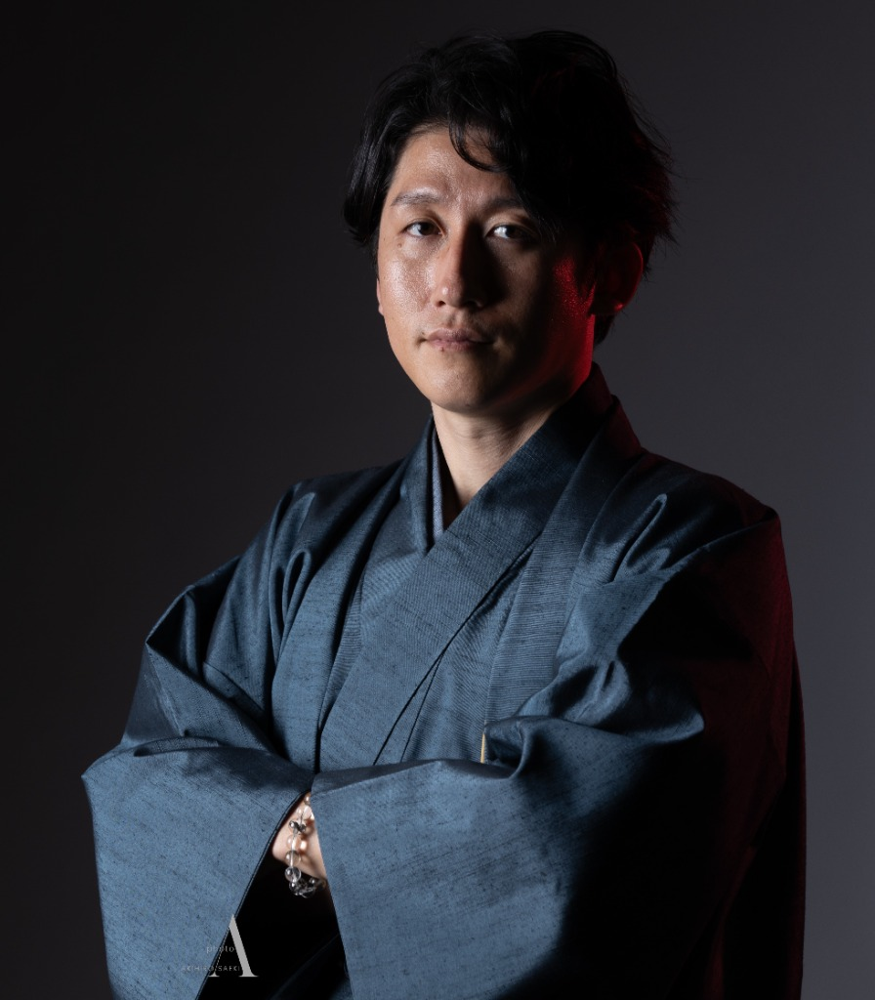
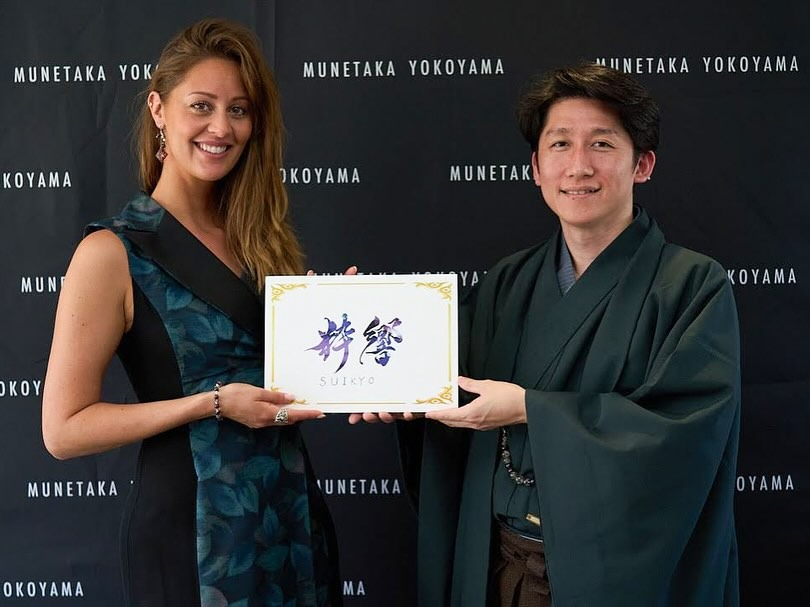
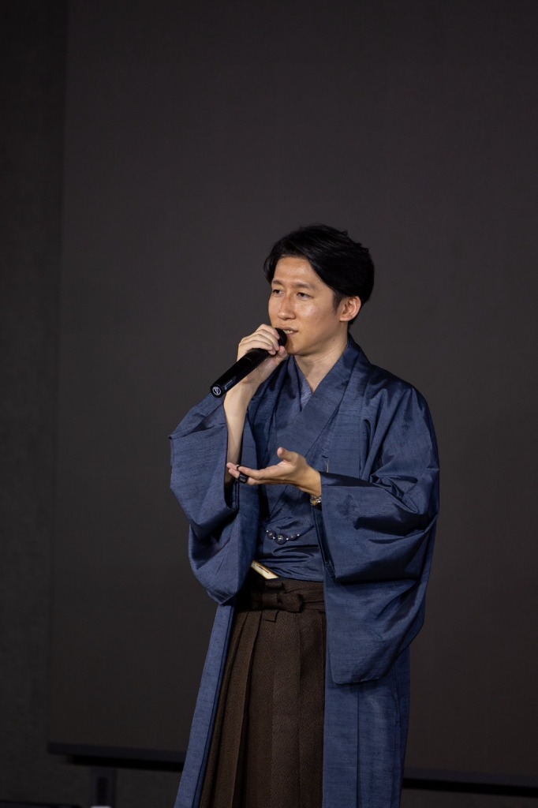
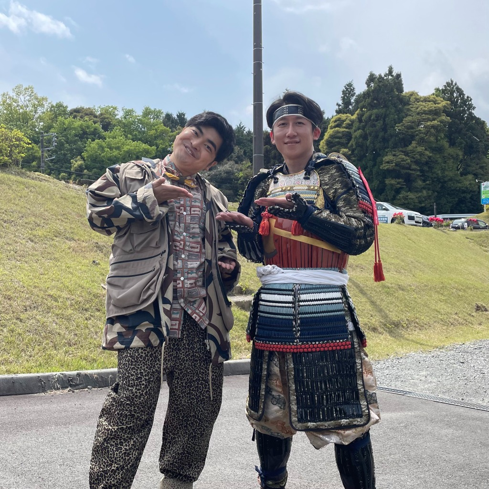
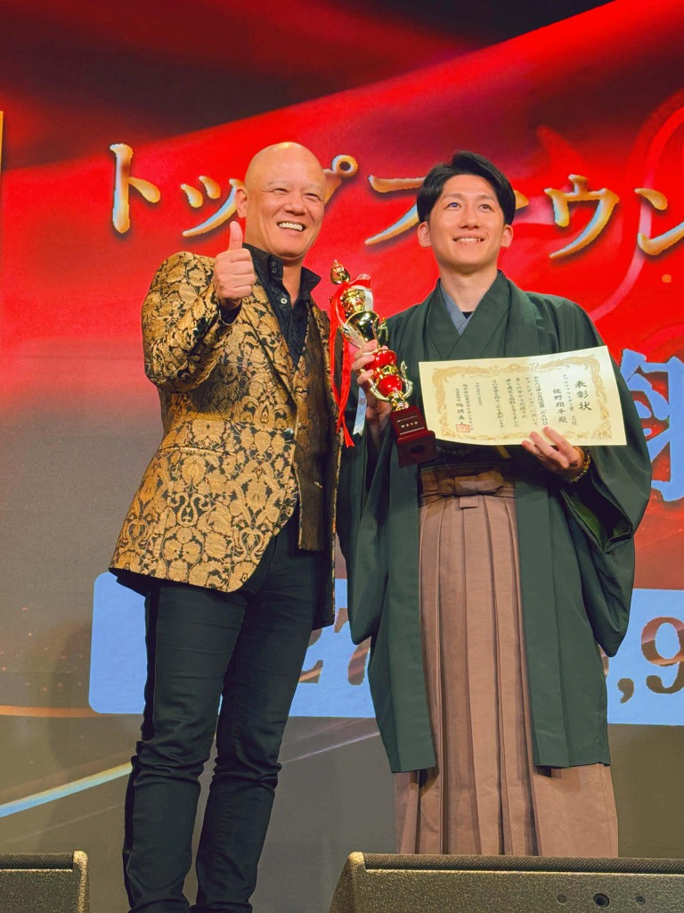
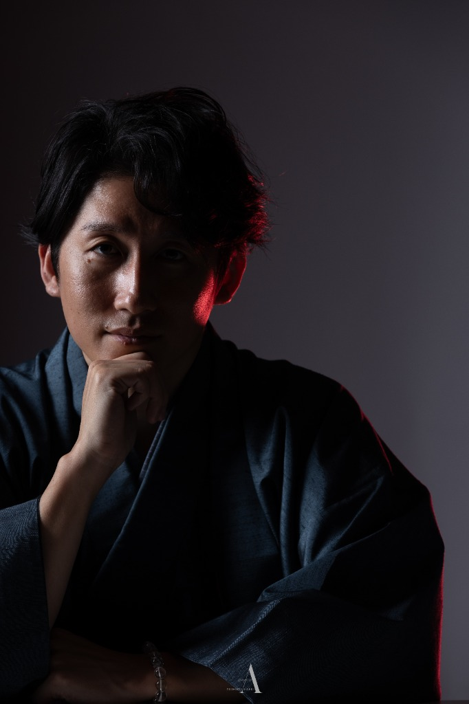
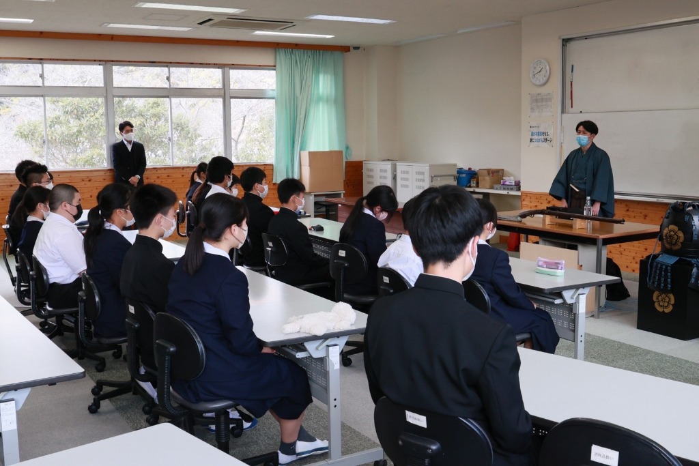

挑戦を、
一人で抱え込まないための
月額顧問
発信、企画、商品づくり、サービス設計、クラウドファンディング。
やりたいことはある。守りたい想いもある。
けれど、一人で考え続けていると、頭の中が散らかり、何から進めるべきか分からなくなることがあります。
そんな方のために、月1回のZoomと日常のテキスト相談を通して、継続的に考えを整理し、判断と前進を支える月額顧問サービスをご用意しました。
単発で終わる相談ではなく、継続して状況を見ながら伴走するからこそ、その場しのぎではない進み方ができます。
本気で前に進みたい方へ。
継続して相談できる顧問という形で、挑戦を支えます。
- 月1回Zoom相談
- 日常のテキスト相談対応
- 初回6ヶ月契約
- 月額22,000円（税込）から

こんなお悩みはありませんか
やりたいことは多いのに、頭の中が整理しきれていない
発信しているが、何を軸にすれば伝わるのか分からない
商品やサービスの魅力を、どう見せればいいか悩んでいる
企画はあるのに、具体的な形に落とし込めない
一人で考えていると、判断に自信が持てなくなる
クラウドファンディングに挑戦したいが、どこから設計すべきか分からない
相談できる相手はいても、継続的に状況を理解してくれる人がいない
想いはあるのに、事業や発信にうまく反映できていない

この顧問サービスについて
このサービスは、単発でアドバイスをして終わる相談サービスではありません。
月1回のZoomで現状や方向性を確認しながら、日常のテキスト相談も通じて、考えの整理、企画の壁打ち、発信や導線の見直しなどを継続的に行う月額顧問サービスです。
事業を進める中では、大きな判断よりも、小さな迷いの積み重ねによって流れが変わることが少なくありません。
- 今やるべきことは何か。
- 今はやらないほうがいいことは何か。
- その企画は本当に今の自分に合っているのか。
- 発信の方向性はずれていないか。
- その見せ方で価値は伝わるのか。
こうした判断を一人で抱え込まず、継続して相談できる状態をつくることが、この顧問サービスの役割です。
正解を押しつけるためのサービスではありません。
現状を整理し、優先順位を見極め、進み方を整えるための顧問です。

この顧問でできること
考えを整理する
頭の中にある構想、悩み、迷いを言語化し、何を優先するべきかを整理します。ぼんやりしていた方向性を、前に進めるための形に落とし込みます。
判断の精度を上げる
今やるべきことと、今はやらないことを切り分け、進み方を整えます。やる気や感覚だけで動くのではなく、積み上がる判断に変えていきます。
企画や発信を磨く
サービスの見せ方、導線、発信の軸、プロフィール設計、企画の方向性などについて、実践ベースで壁打ちを行います。
継続して伴走する
月1回のZoomだけでなく、日常のテキスト相談でも繋がることで、止まりそうな時や迷った時に立て直しやすくなります。
想いと事業をつなぐ
ただ売るためだけではなく、「なぜそれをやるのか」「何を大切にしているのか」という想いを、事業や発信に落とし込む整理を行います。
ご相談いただける主な内容

ご相談内容は、発信だけ、クラウドファンディングだけに限りません。今進めていること全体を見ながら、何を整えるべきかを一緒に考えていきます。
※なお、本サービスは実務代行ではありません。投稿作成の代行、資料作成の代行、デザイン制作、運用代行などは含まれておりません。必要に応じて、別途ご相談や個別見積もりとなる場合があります。
佐野翔平の顧問が選ばれる理由
実際に自分自身で挑戦し続けてきた経験があるから
私はこれまで、日本の伝統技術を活かしたアクセサリーやジュエリー、日用雑貨の企画販売、日本刀関連事業、クラウドファンディング支援、発信活動など、複数の事業を並行して設計・運営してきました。
机上の理論だけでなく、実際に動きながら考え、試し、修正し、形にしてきた経験があります。
そのため、理想論だけではない、現実に落とし込むための整理や方向修正ができます。
理念や想いを、事業や発信に落とし込む視点があるから
商品やサービスを売ることだけを考えるのではなく、「なぜこの活動をするのか」「何を守りたいのか」という背景や理念を、事業や発信と結びつけて設計することを大切にしています。
想いはあるのに伝わらない。活動はしているのに価値が届かない。
そうした状態を、言葉と設計の両面から整えることができます。
単発ではなく、継続して見られるから
単発相談では、その時点でのアドバイスはできます。
ただ、その後どう変わったか、どこで止まったか、次に何を優先すべきかまでは追いきれないこともあります。
月額顧問という形にすることで、現状を継続して把握しながら、その時々に合った判断支援ができることが大きな特徴です。


佐野 翔平 Shohei Sano
日本の伝統・文化・歴史・技術を次の世代へ残していくことを目的に、粋響株式会社および伝統屋 暁を運営。
伝統技術を活かしたアクセサリー、ジュエリー、日用雑貨の企画販売、日本刀および専用ディスプレイ関連事業、クラウドファンディング支援などを展開し、理念と事業をつなぐ形で活動を続けています。
主な実績
- 自身のクラウドファンディングで累計3,000万円以上を調達（5件）
- 他者のクラウドファンディング支援実績20件以上
- 支援案件で累計6,000万円以上の調達実績
- 目標未達は1件のみで、ほとんどの案件が目標達成
- 複数事業を並行して設計、運営
- 発信、企画、販売、イベント、ブランド設計まで一貫して実行
※今後、顧問先実績やお客様の声も随時追加予定です。
お客様の声
この顧問サービスが向いている方
- 個人事業主の方
- 小規模事業を育てている方
- これから自分の活動や事業を形にしていきたい方
- 自分の活動や商品に想いがある方
- 発信、企画、導線を整理したい方
- クラウドファンディングを活用したい方
- 継続して壁打ちできる相手を求めている方
- 本気で前に進みたい方
向いていない可能性がある方
- 実務そのものを代行してほしい方
- 丸投げで成果だけを求める方
- 継続的に取り組む意思がない方
- とにかく安く、何でも無制限に相談したい方
この顧問は、「誰でもどうぞ」というサービスではありません。
本気で整理し、前に進みたい方とご一緒したいと考えています。

料金プラン
スタンダード顧問
継続的に相談しながら、考えを整理し、進み方を整えたい方向けの基本プランです。
内容
- 月1回 Zoom相談（60分）
- テキスト相談対応
- 返信目安：原則48時間以内
- 初回契約6ヶ月（以後6ヶ月単位で更新）
このプランに向いている方
- 定期的に壁打ちしながら進めたい方
- 発信や企画の方向性を整理したい方
- 継続して相談できる環境を持ちたい方
伴走顧問
より密度高く相談しながら、企画、発信、導線設計などを深めて進めたい方向けの上位プランです。
内容
- 月1回 Zoom相談（60分）
- テキスト相談対応
- 返信目安：原則24時間以内
- 初回契約6ヶ月（以後6ヶ月単位で更新）
このプランに向いている方
- 標準的な相談よりも、より手厚い伴走を求める方
- 進行中の企画やサービスを深く整理したい方
- スピード感を持って相談しながら進めたい方
【補足】どちらのプランも、実務代行は含みません。
ご相談の内容や頻度、進め方のイメージに応じて、適したプランをご案内します。
ご契約について
- 契約形態：月額顧問契約
- 初回契約期間：6ヶ月 （更新：6ヶ月単位）
- 相談方法：Zoom、テキスト連絡（LINE、Messenger、Gmail など）
- 対応時間：平日9時〜20時を基本
- お支払い方法：銀行振込 または 指定決済方法
- ご契約開始前に、サービス内容と運用ルールをご案内します
【ご確認事項】
- 本サービスは成果保証ではありません。
- 実務代行、制作代行は含まれておりません。内容によっては別途個別支援をご案内する場合があります。
- 返信は営業時間内を基準とし、内容や状況によって前後する場合があります。
- 緊急対応は含まれておりません。
よくある質問
はい。個人事業主の方や、これから事業を育てていきたい方もお申し込みいただけます。
発信、企画整理、商品やサービスの見せ方、導線設計、クラウドファンディング、ブランドの方向性など、事業全体の整理や壁打ちをご相談いただけます。
単発相談は、その場でのアドバイスが中心になります。月額顧問では、継続的に状況を把握しながら相談を進められるため、より実行に結びつきやすいのが特徴です。
本顧問サービスには、実務代行は含まれておりません。必要に応じて、別途ご相談となります。
はい。初回契約は6ヶ月です。その後は6ヶ月単位で更新となります。
スタンダード顧問は原則48時間以内、伴走顧問は原則24時間以内を目安にご返信します。状況により前後する場合があります。
状況に応じてご相談可能です。タイミングや条件については個別にご案内します。
現在の状況や相談したい内容に応じてご案内します。まずはお気軽にお問い合わせください。
お申し込みについて
現在、月額顧問は少人数限定で受付しています。
理由は、一人ひとりの状況を把握しながら、誠実に伴走したいと考えているからです。
ご興味のある方は、以下の内容を添えてお問い合わせください。
- お名前
- ご活動内容
- 現在のお悩み
- 相談したい内容
- ご希望プラン（未定でも可）
内容を確認のうえ、順次ご案内いたします。
やりたいことがある。
守りたい想いがある。
けれど、一人で整理しきれない。
そんな時に、継続して相談できる相手がいるだけで、進み方は大きく変わります。
発信も、企画も、商品づくりも、クラウドファンディングも、思いつきだけでは続きません。
大切なのは、進みながら整え、崩れそうな時に立て直し、少しずつでも前に進み続けることです。
月額顧問という形で、その積み重ねを支えるお手伝いができればと思っています。
本気で前に進みたい方は、ぜひご相談ください。